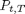

Forward Rate to Zero Coupon Bond
The class returns zero coupon bond prices from forward rates.
Contents
%MATLAB CODE %%%%%%%%%%%%%%%%%%%%%%%%%%%%%%%%%%%%%%%%%%%%%%%%%%%%%%%%%%%%%%%%%%%%%%%%%%% classdef bootstrap_FwdtoZCB < prursg.Bootstrap.BaseBootstrapAlgorithm
How to Use the Class
For a data series of forward rates we calculate zero coupon bond prices with a specific output frequency profile.
Properties
Input Data Series
[InputFwdRates] - Forward rates, , between time, and , with term, .
Data Type: data series
Input Parameters
[outputfreq] - A string that lists the number of monthly, quarterly, semi-annual and annual intervals.
Data Type: string
%MATLAB CODE %%%%%%%%%%%%%%%%%%%%%%%%%%%%%%%%%%%%%%%%%%%%%%%%%%%%%%%%%%%%%%%%%%%%%%%%%%% properties % Data Series InputFwdRates = []; % Parameters outputfreq = []; end %%%%%%%%%%%%%%%%%%%%%%%%%%%%%%%%%%%%%%%%%%%%%%%%%%%%%%%%%%%%%%%%%%%%%%%%%%%
List of Methods
The class introduces one method:
bootstrap_FwdtoZCB () - Function returns zero coupon bond prices from an input of forward rates to a given output frequency profile.
%MATLAB CODE %%%%%%%%%%%%%%%%%%%%%%%%%%%%%%%%%%%%%%%%%%%%%%%%%%%%%%%%%%%%%%%%%%%%%%%%%%% methods
% Constructor function obj = bootstrap_FwdtoZCB () obj = obj@prursg.Bootstrap.BaseBootstrapAlgorithm(); end %%%%%%%%%%%%%%%%%%%%%%%%%%%%%%%%%%%%%%%%%%%%%%%%%%%%%%%%%%%%%%%%%%%%%%%%%%%
ans =
Bootstrap.bootstrap_FwdtoZCB handle
Package: Bootstrap
Properties:
InputFwdRates: []
outputfreq: []
Details of Methods
Inputs
[InputFwdRates] - Forward rates, , between time, and , with term, .
Data Type: data series
[outputfreq] - A string that lists the number of monthly, quarterly, semi-annual and annual intervals.
Data Type: string
Outputs
Zero coupon bonds in accordance with the output frequency profile.
Calculations
Sort and clone the input data.
Depending whether we have continuous or discrete compounding the zero coupon bond prices are calculated using:
i) Continuous Compounding
where
 : The price of a zero coupon bond at time, , which pays 1 at maturity, .
: Forward rate between time, and .
or
ii) Annual Compounding
with
: Compounding annual frequency.
The next step is to identify and set up the output frequency profile which specifies the frequency of outputs e.g. annually or monthly etc.
Finally the data series properties are updated.
%MATLAB CODE %%%%%%%%%%%%%%%%%%%%%%%%%%%%%%%%%%%%%%%%%%%%%%%%%%%%%%%%%%%%%%%%%%%%%%%%%%% function results = Bootstrap(obj, DataSeriesIn) newSortDataSeries=Bootstrap.BsSort(); obj.InputFwdRates =newSortDataSeries.SortDataSeries... (DataSeriesIn(1).Clone); freq = obj.InputFwdRates.compoundingfrequency; results = obj.InputFwdRates ; for i = 1: size(results.dates, 1) numberofpoints = size(results.values{i},2); Maturity =cell2mat(obj.InputFwdRates.axes(1).values); if strcmp(obj.InputFwdRates.compounding, 'cont') results.values{i}(1) = ... exp (- obj.InputFwdRates.values{i}(1) .*... Maturity(1)); for j = 2:numberofpoints results.values{i}(j) = ... results.values{i}(j-1) .* exp ... (obj.InputFwdRates.values{i}(j-1) .*... (Maturity(j-1) - Maturity(j))); end elseif strcmp(obj.InputFwdRates.compounding , 'ann') results.values{i}(1) = (1 + ... obj.InputFwdRates.values{i}(1)/freq).^... (-Maturity(1)*freq); for j = 2:numberofpoints results.values{i}(j) = results.values{i}(j-1).*... (1 + obj.InputFwdRates.values{i}(j)/freq).^... ((Maturity(j-1) - Maturity(j))*freq); end end end maxTerm = obj.InputFwdRates(1).axes(1).values{1, end}; BsfrequencyprofileObject =Bootstrap.Bsfrequencyprofile... (obj.outputfreq,maxTerm); outputfreqProfile =... BsfrequencyprofileObject.AdjustedIntervalArray; results = BsfrequencyprofileObject.SmallerDataSeriesObject... (outputfreqProfile,results); results.Name = ''; results.source ='iMDP'; results.ticker= 'na'; results.description = 'derived ZCBtoZCB method'; results.ratetype = 'zcb'; results.compounding ='na'; results.compoundingfrequency= 'na'; results.daycount ='na'; results.units ='absolute'; end
end
end